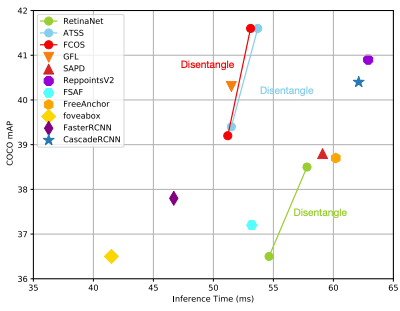

Zehui Chen 陈泽徽PhD CandidateBrain-Inspired Vision Laboratory
|

|
Biography
I am a PhD candiadte at University of Science and Technology of China (USTC), advised by Prof. Feng Zhao. I got a B.E. degree at Tongji University in 2020.
My research interests include object detection (2D, 3D, or both of them), instance segmentation, and unsupervised learning.
News
- One paper [AutoAlign] was accepted by IJCAI 2022!
- One paper [SimIPU] was accepted by AAAI 2022!
- One paper [DDOD] was accepted by ACM MM 2022!
Awards
- National Scholarship. 2022.
- 2nd place at Streaming Detection Challenge, Full Stack Track! (CVPR 2021 Workshop)
- 3rd place at UG2+ Challenge, Low-Light Face Detection Track! (CVPR 2021 Workshop)
- 1st place at 3D FUTURE Challenge, Instance Segmentation Track! (IJCAI 2020 Workshop)
- 1st place at Waymo Open Challenge, 2D Detection Track! (CVPR 2020 Workshop)
Publications
 |
Zehui Chen, Zhenyu Li, Shiquan Zhang, Liangji Fang, Qinhong Jiang, Feng Zhao
AutoAlignV2: Deformable Feature Aggregation for Dynamic Multi-Modal 3D Object Detection Arxiv, 2022. |
 |
Zehui Chen, Zhenyu Li, Shiquan Zhang, Liangji Fang, Qinhong Jiang, Feng Zhao, Bolei Zhou, Hang Zhao
AutoAlign: Pixel-Instance Feature Aggregation for Multi-Modal 3D Object Detection IJCAI, 2022 [PDF] |
|  | Zehui Chen*, Chenhongyi Yang*, Qiaofei Li, Feng Zhao, Zheng-jun Zha, Feng Wu
Disentangle Your Dense Object Detector ACM MM (Oral), 2021. [PDF] [Code] |
 |
Zhenyu Li, Zehui Chen, Ang Li, Liangji Fang, Qinhong Jiang, Xianming Liu, Junjun Jiang, Bolei Zhou, Hang Zhao
Unsupervised Domain Adaptation for Monocular 3D Object Detection via Self-Training Arxiv, 2022 [PDF][Code] |
| Zhenyu Li, Zehui Chen, Ang Li, Liangji Fang, Qinhong Jiang, Xianming Liu, Junjun Jiang
SimIPU: Simple 2D Image and 3D Point Cloud Unsupervised Pre-Training for Spatial-Aware Visual Representations AAAI, 2022 [PDF][Code] |